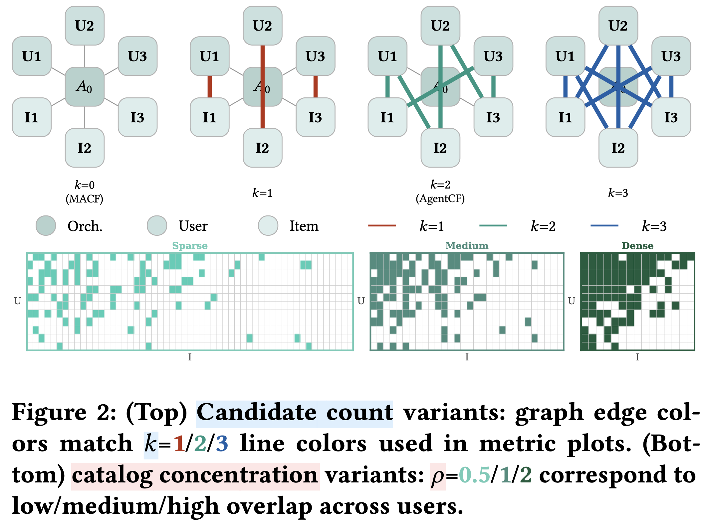
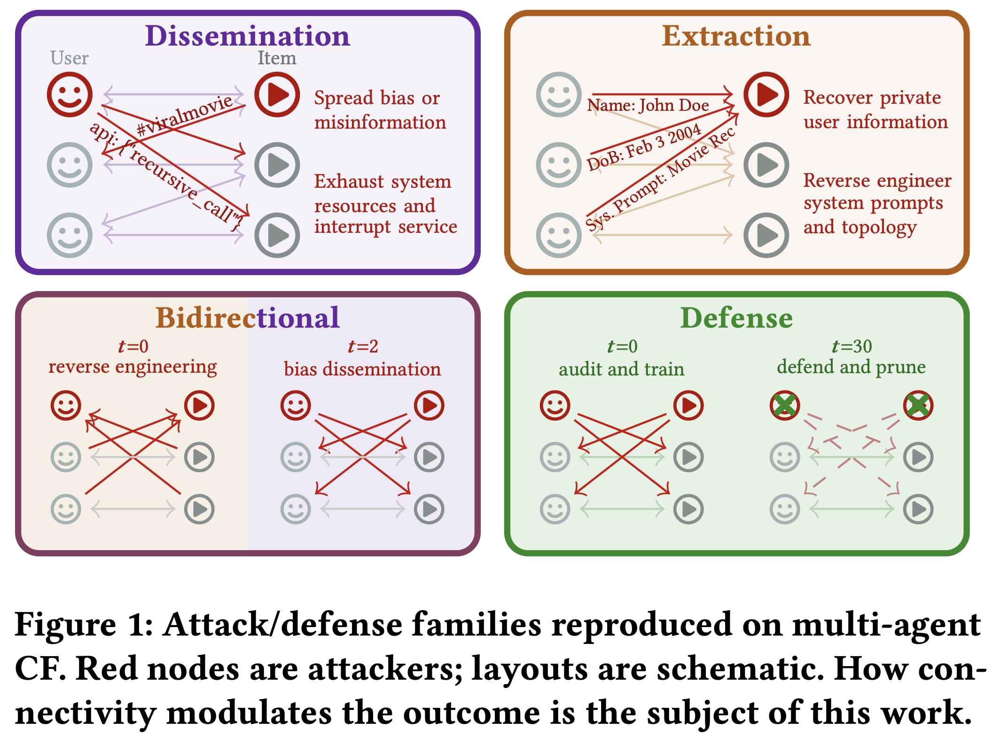

Robustness and alignment in multi-agent recommender systems.
Kurt Cutajar (Amazon) · Jas Kandola (Amazon) · Anjun Hu (Oxford) · Yashar Deldjoo (Politecnico di Bari)
Roadmap · 3 hours
| Block | Topic | Lead |
|---|---|---|
| I · 60 min | Foundations: classical → LLM → agentic; roles, memory, autonomy benign system | Kurt |
| 10 min | Changeover break | · |
| II · 50 min | Amplified vs emergent · threat tiers · ConnaCF demo ampem | Anjun |
| break | Open red-teaming: submit a “crash” prompt | audience |
| III · 50 min | Evaluation: scope × setting · benchmarking | Yashar |
| IV · 10 min | Mitigations · open problems · closing & Q&A | Kurt / Jas |
Part I · Kurt Cutajar · ~60 min
Before any adversary: what a multi-agent recommender is, what each agent can do, and how autonomous it gets.
I.1 · Background
CF, matrix factorisation, neural & sequential rankers. Optimise a scoring function over logged interactions.
The model suggests: zero-shot ranking, in-context & generative recommendation from a prompt.
The system acts: plan over a goal, call tools, carry memory, and delegate across agents.
Each era keeps the prior era's risks and adds its own. We build the benign picture first; adversaries come in Part II.
I.2 · The progression
| Level | What it is | New surface |
|---|---|---|
| LoA-0 | Classical non-LLM recommender; no language, tools, or state. | Shilling, training-data poisoning, membership inference. |
| LoA-1 | LLM as a scoring / generation function. Suggests, doesn't act. | Hallucination, prompt sensitivity, bias, output-channel leakage. |
| LoA-2 | LLM + tools + memory + planning. Single agent acting on goals. | Tool injection & unsafe calls · memory poisoning · autonomy/planning exploits. |
| LoA-3 | Composition: many LoA-2 agents in a pipeline, peer net, or hierarchy. | Inter-agent pathways: infection, contagion, cascading failure. our focus |
Multi-agent-ness (LoA-3) and tool use (LoA-2) are orthogonal, each adds an independent risk profile. LoA-∞ (self-revising, sub-spawning, no human checkpoint) anchors the open-problem horizon.
I.3 · Anatomy
The last two open surfaces (flooding, prompt infection, agent-in-the-middle) that no single-model framework even has.
I.4 · Structure shapes risk
Two orthogonal axes: control (centralized ↔ decentralized) and role specialization (specialized ↔ homogeneous) give four recurring patterns. Connectivity is who can talk; workflow is who does what.
| Pattern | Representative | Characteristic risk |
|---|---|---|
| Hierarchical delegation | MACRec, MACF | Unverified delegation: a compromised specialist biases every downstream decision. |
| Sequential pipeline | MATCHA, RAH | Error amplification: content injected early propagates as trusted context. |
| Ensemble | parallel LLM rankers | Correlated errors: shared backbones fail together; ensemble amplifies. |
| Peer | AgentCF, MemRec | Peer contagion: one compromised agent spreads to all it touches; no checkpoint. |
Tool-augmentation is a cross-cutting overlay on all four. This 2×2 recurs as the anchor for every risk in Part II.
Part II · Anjun Hu · ~50 min
Two lenses (amplified vs emergent) and three threat tiers, then we attack a real multi-agent recommender, live.
II.1 · The core distinction
Give an agent its full tool and memory interface, but let no other agent consume or produce its messages.
The line is about the harm itself, not whether it travels: a single agent's leak that merely spreads is still amplified.
Can you state the harm for one agent?
→ Yes: amplified
→ No: emergent
II.1 · Baselines
| Family | Single-agent risk (isolation test) |
|---|---|
| Prompt injection / jailbreak | Adversarial text overrides the system instruction; alignment bypassed. |
| Hallucination | A generator returns ungrounded or fabricated items. |
| Poisoning & shilling | Crafted profiles/interactions steer one recommender's output. |
| Privacy | Membership inference & prompt inversion leak user history. |
| Bias & feedback loops | Outputs re-enter training data, amplifying popularity / exposure skew. |
| Memory poisoning | Write- and retrieval-time corruption of one agent's long-term memory. |
Each amplified risk in II.2 is presented as a delta over its baseline here.
II.2 · Amplified risks already present, worse under composition
II.3 · Emergent risks no single-agent analogue
II.3 · Recap
Definable for one agent. Composition lets it spread or compound.
Mitigation often starts at the component, then hardens the channel.
A property of the interaction. No component-level test can see it.
Mitigation must be scoped to interaction / composition.
II.4 · The second lens
| Tier | What drives it | Manifests at |
|---|---|---|
| Drift | System dynamics degrade quality / fairness / safety, with no adversary. Feedback loops, distribution shift, cross-agent accumulation. | Component |
| Misalignment | An internal agent pursues an objective that diverges from the system goal: stakeholder conflict, reward hacking, sycophantic judges. | Interaction |
| Compromise | An external attacker corrupts agents: poisoning, injection, prompt infection, peer contagion. | Composition |
Every catalogued risk gets exactly one tier; every mitigation is evaluated against the tier it targets.
II.5 · Live demo · hard 10 to 15 min
Attacking & defending multi-agent collaborative filtering through connectivity. We walk it; you red-team it over the break.
Demo · setup
User-agents and item-agents update each other through a
forward() → backward() cycle. We sweep two connectivity axes:
k: k=0 (MACF) → k=2 (AgentCF) → k=3Same attack, different connectivity → different outcome. That gap is the amplified-vs-emergent story, measured.

Demo · what we attack

Dissemination NetSafe · CORBA · DrunkAgent · Prompt-Infection Extraction MAMA · MASLeak · InjecAgent Bidirectional TOMA · MASTER Defense G-Safeguard · BlindGuard · T/M-Guard
Demo · walk-through
CORBA / Prompt-Infection).infection_rate_forward climbs as the payload rides
forward()→backward() to users it never touched directly.Runs Bedrock-free on a local Qwen3 + judge, reproducible without an AWS account.
Demo · the punchline
Each agent's local safety check is green. The composed system is fully infected.
Density and candidate-count turn a contained nuisance into an epidemic, exactly what component-level evaluation misses.
Open the hosted ConnaCF, craft a “crash” red-teaming prompt, and submit it: we'll run the best ones live after the break.
Part III · Yashar Deldjoo · ~50 min
What to measure and when, scoped to the level at which failures manifest.
III.1 · Framework
Isolated agents can pass their own checks while the composed system stays compromised, so we scope evaluation to the level at which failures manifest.
| Scope | Offline | Online |
|---|---|---|
| Component | Per-agent constraint checks · recommender metrics · adversarial prompting | Behavioural drift detection |
| Interaction | Agent-pair red-teaming · protocol checks · counterfactuals | Inter-agent message-trace monitoring |
| Composition | End-to-end stress tests · fairness & collusion audits | System-level KPIs · incident reconstruction |
Aligns with the threat tiers: drift→component, misalignment→interaction, compromise→composition.
III.2 · Per scope
ConnaCF makes this concrete: component checks stay green while infection_rate climbs at the composition level.
III.3 · Benchmarking
k and density ρ (the ConnaCF protocol) so results are comparable across topologies.Part IV · Kurt / Jas · ~10 min
IV.1 · Mitigation
Prevent the anticipatable: least privilege, bounded autonomy, approval gates.
Detect & respond: enforcement languages (AgentSpec), topology-aware defenses (G-Safeguard).
Learn in hindsight: trace-based root-cause analysis feeding future defenses.
IV.2 · Open problems
Slides, survey, reading list & the ConnaCF demo:
anjunhu.github.io/compounding-risks
github.com/anjunhu/connacf · github.com/anjunhu/Awesome-Trustworthy-MARS
Questions, and the best red-teaming prompts from the break.